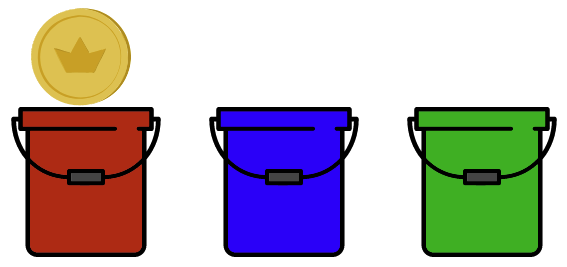
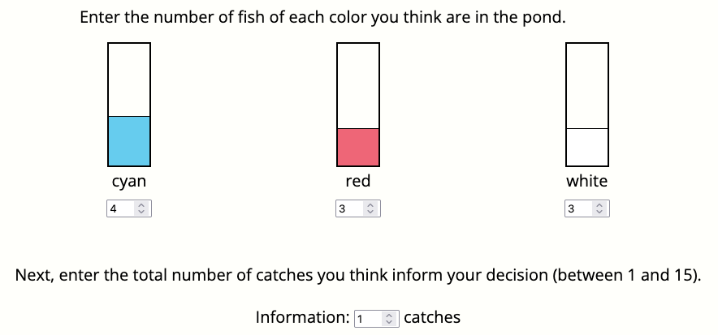

In this experiment, a machine drops coins into buckets with different probabilities. Your goal is to learn how likely the coin is to be in each bucket. The experiment consists of four phases:
In the first phase of the experiment, you will read a message from a previous participant who saw the same buckets. The previous participant was instructed to write a message that helps you learn about the probabilities, but they only had ${messageWritingTime} seconds to write the message.
You will then learn more about how likely the coin is to be in each bucket through a series of learning trials. In each learning trial, one of the buckets will have a coin in it. You should click the bucket where you think the coin is, then you will see where the coin actually is.
The buckets all have the same probability of having the coin in every trial. The image below shows a learning trial where the coin is in the red bucket.
Finally, you will be asked to predict how likely a coin is to be in each bucket. Imagine a million coins were dropped into buckets, what percentage of them do you think would fall in each of the buckets?
You will make a prediction using this interface:
The interface asks you to report your confidence along with probabilities. You should use the slider to adjust your confidence so that are 95% sure that the true probability is in the shaded region. You will earn a bonus if the true probability is in the shaded region. Your bonus will be larger the smaller the region is.
Press "Next" when you are ready to see the message that a previous participant left for you.